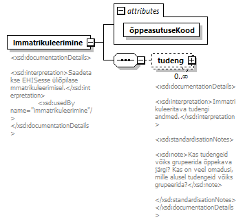
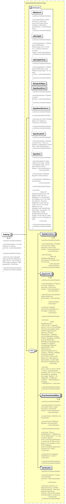

| diagram |  | ||||||||||||
| namespace | http://www.ern.ee/õpe | ||||||||||||
| properties |
|
||||||||||||
| children | tudeng | ||||||||||||
| attributes |
|
||||||||||||
| annotation |
|
||||||||||||
| source | <xs:element name="Immatrikuleerimine"> <xs:annotation> <xs:documentation> <xsd:documentationDetails> <xsd:interpretation>Saadetakse EHISesse üliõpilase mmatrikuleerimisel.</xsd:interpretation> <xsd:usedBy name="immatrikuleerimine"/> </xsd:documentationDetails> </xs:documentation> </xs:annotation> <xs:complexType> <xs:sequence> <xs:element name="tudeng" type="immatrikuleerimineType" minOccurs="0" maxOccurs="unbounded"> <xs:annotation> <xs:documentation> <xsd:documentationDetails> <xsd:interpretation>Immatrikuleeritava tudengi andmed.</xsd:interpretation> <xsd:standardisationNotes> <xsd:note>Kas tudengeid võiks grupeerida õppekava järgi? Kas on veel omadusi, mille alusel tudengeid võiks grupeerida?</xsd:note> </xsd:standardisationNotes> </xsd:documentationDetails> </xs:documentation> </xs:annotation> </xs:element> </xs:sequence> <xs:attribute name="õppeasutuseKood" type="xs:string" use="required"/> </xs:complexType> </xs:element> |
| type | xs:string | ||
| properties |
|
||
| source | <xs:attribute name="õppeasutuseKood" type="xs:string" use="required"/> |
| diagram |  | ||||||||||||||||||||||||||||||||||||||||||||||||||||||||||||||||||||
| namespace | http://www.ern.ee/õpe | ||||||||||||||||||||||||||||||||||||||||||||||||||||||||||||||||||||
| type | immatrikuleerimineType | ||||||||||||||||||||||||||||||||||||||||||||||||||||||||||||||||||||
| properties |
|
||||||||||||||||||||||||||||||||||||||||||||||||||||||||||||||||||||
| children | õppekoormus õppevorm finantseerimisallikas haridustee | ||||||||||||||||||||||||||||||||||||||||||||||||||||||||||||||||||||
| attributes |
|
||||||||||||||||||||||||||||||||||||||||||||||||||||||||||||||||||||
| annotation |
|
||||||||||||||||||||||||||||||||||||||||||||||||||||||||||||||||||||
| source | <xs:element name="tudeng" type="immatrikuleerimineType" minOccurs="0" maxOccurs="unbounded"> <xs:annotation> <xs:documentation> <xsd:documentationDetails> <xsd:interpretation>Immatrikuleeritava tudengi andmed.</xsd:interpretation> <xsd:standardisationNotes> <xsd:note>Kas tudengeid võiks grupeerida õppekava järgi? Kas on veel omadusi, mille alusel tudengeid võiks grupeerida?</xsd:note> </xsd:standardisationNotes> </xsd:documentationDetails> </xs:documentation> </xs:annotation> </xs:element> |